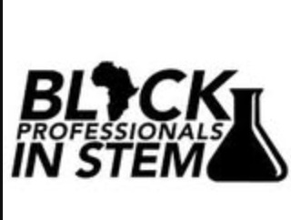
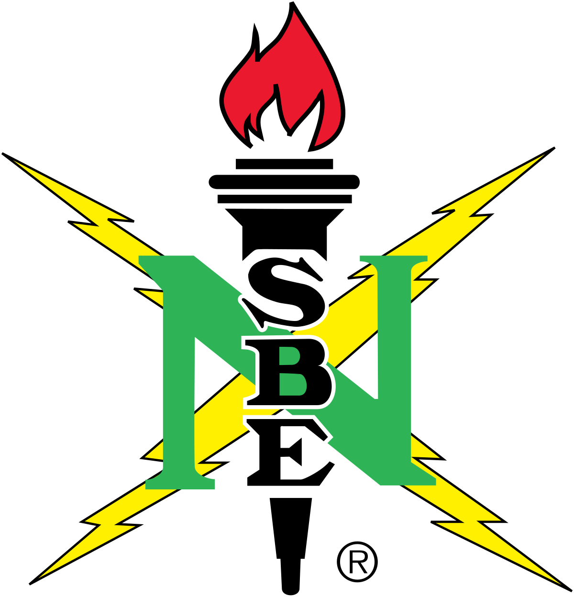
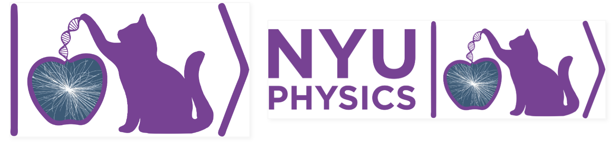

NYU Clubs & Organizations
HASA
Former E-Board member, Media Relations Manager.

BIS (Black in STEM)
Co-creator and E-Board member.

NYU NSBE(National Society of Black Engineers)
Engaged in networking events and workshops. Attending NSBE National Conference

SPS (Society of Physics Students)
Active Member.
NYU OSIRIS Lab
Attending meetings, working towards official membership.